WALL OF WORK.
- Featured
- Web Design
- Graphic Design
- Digital Illustration
- Traditional Art
- Film and VFX
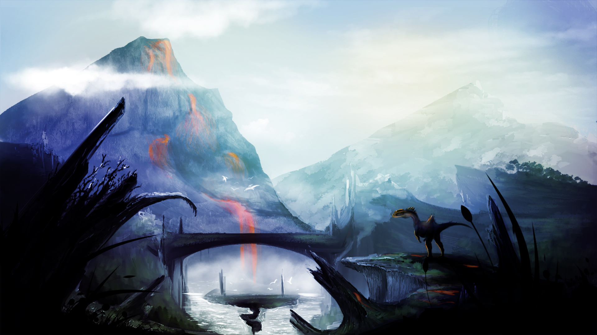
RESTART
This piece was created solely for the purpose of my portfolio's intro page. This was because I needed to make each feature of this piece on its own layer so that I could later create a multi-layered parallax for my intro page. If I didn't have a powercut, it would have been done in less than 9 hours.
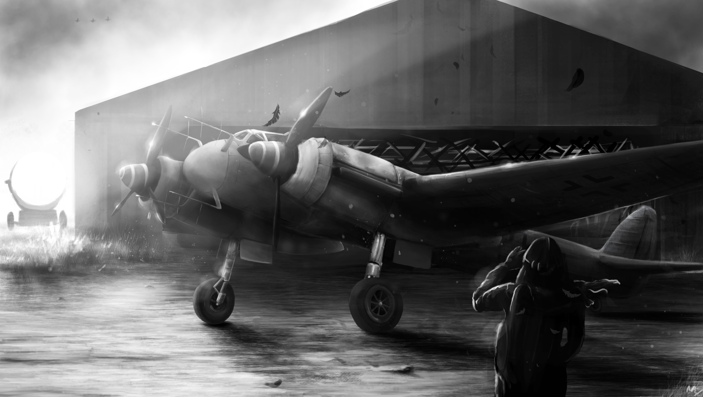
NIGHT HUNTER
Warbird Replicas is an outstanding company creating top quality handmade remote controlled aircraft of the World War era. My client contacted me regarding an issue of lacking promotional material for the lesser known aircraft. In order to gather interest for these aircraft my client wished to have some dynamic artwork for the aircraft, in this case, the Ju88.
When my client sent me a photo of the desired angle and proportions, I created a few sketches to be sent to him to see which one he prefers. This will allow the client to get a feel of what the final product would look like near the end. Each of these drafts are sent to the client in order to keep close communications. This is one of my absolute favourite pieces from my aircraft artwork, due to the dark but angellic atmoshpere of the presence of the Ju88, the night bomber.
DRAFTS
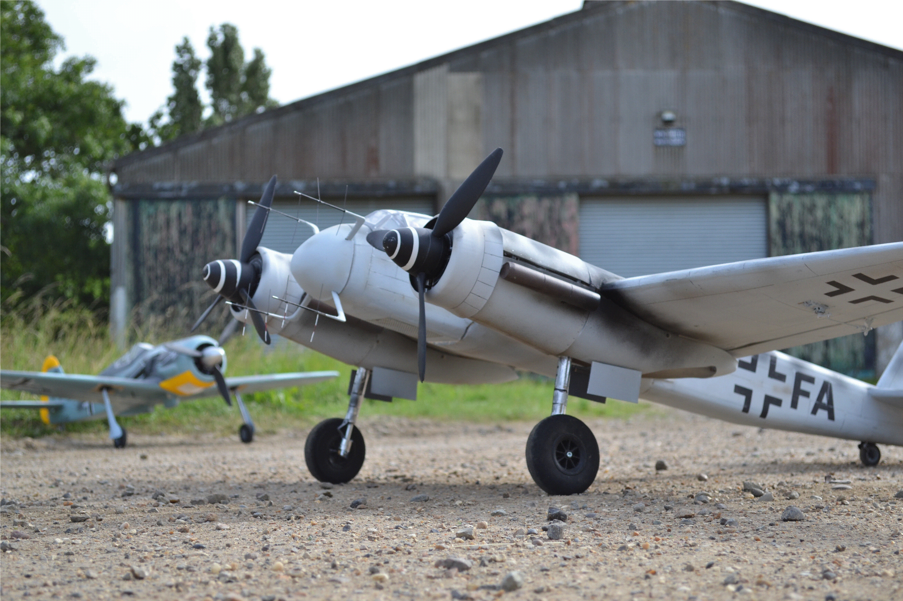
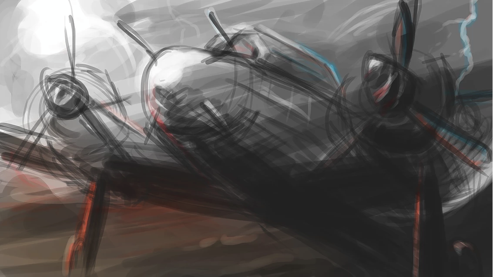
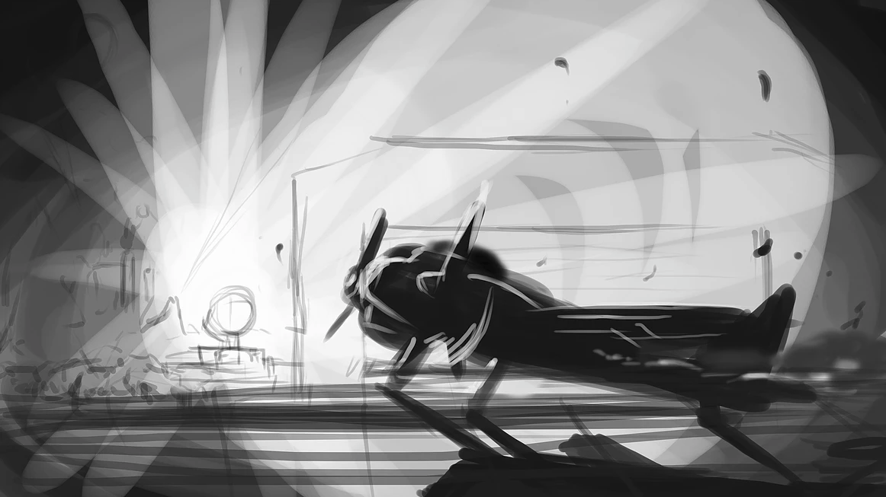
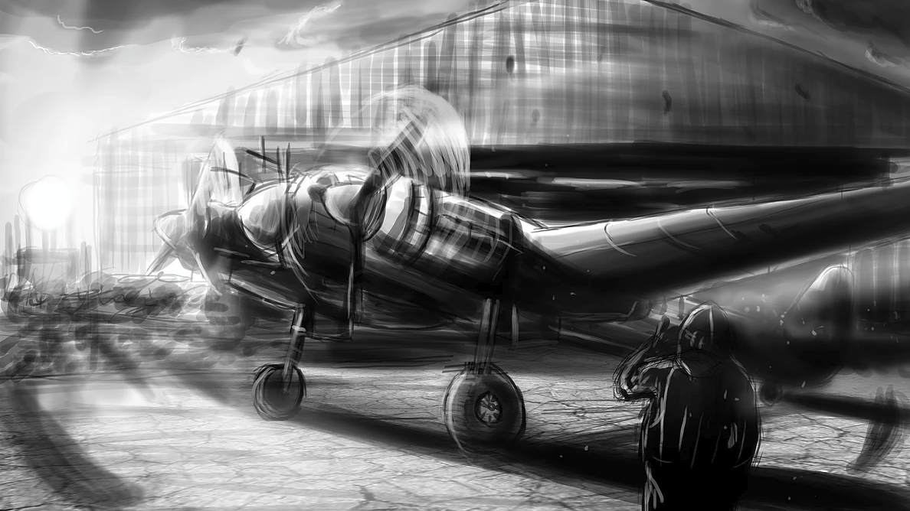
Like all of my art, I create drafts according to what my client describes, creating short and quick designs of what I can follow through with. This not only helps my brain storming, but also gives a good idea of what the piece may look like once finished, without losing time.
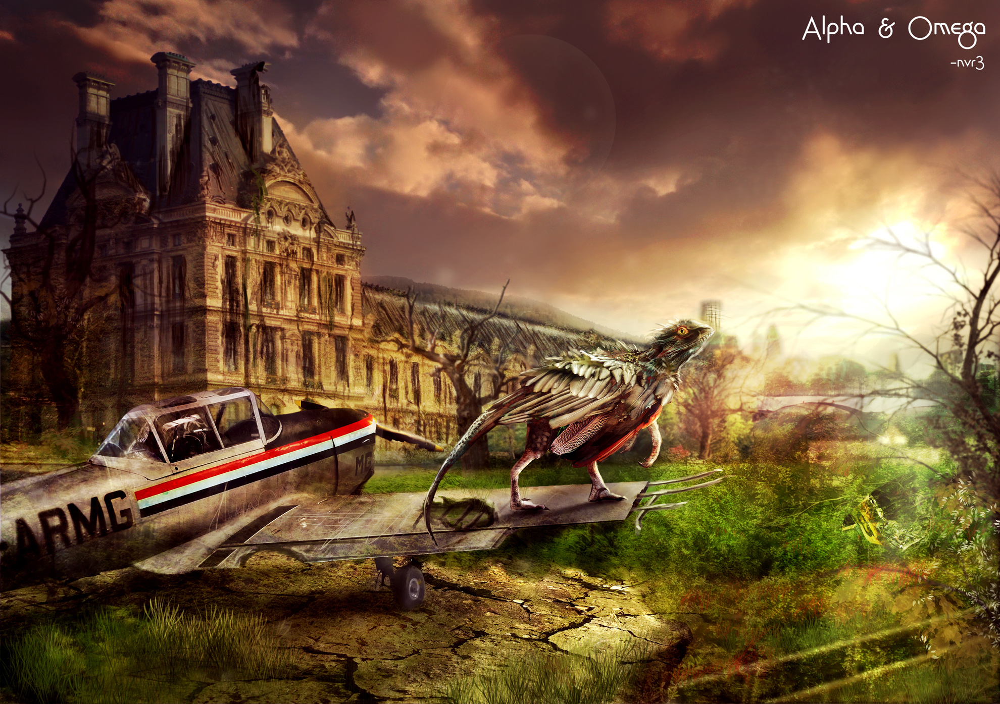
ALPHA & OMEGA
For my Photography module at University, I had to create a poster using only photomanipulation tools.
I created this piece using photos I have taken from Austria, France (The building) and Duxford Hangar along with a photo of a Peacock, crocodile and a bearded dragon to create the dinosaur. (Have you noticed I like dinosaurs?) I used a range of layer blend modes and brushes, as well as my wacom tablet to cut around the images with a very think but soft eraser to keep edges fine and soft.
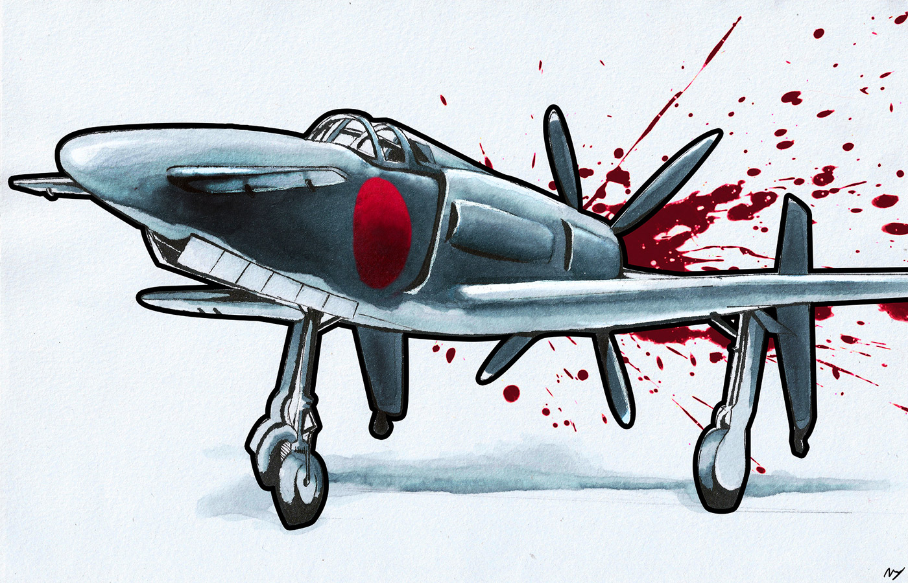
THE LAST INTERCEPTOR
This started out as a quick practice sketch while I was sitting in the middle of a field. I wanted to practice drawing architectural figures, that involves getting every line perfect, which is a very tough task.
However it ended up becoming something I was eager to finish, and for the first time, use my copic markers.
REFERENCE

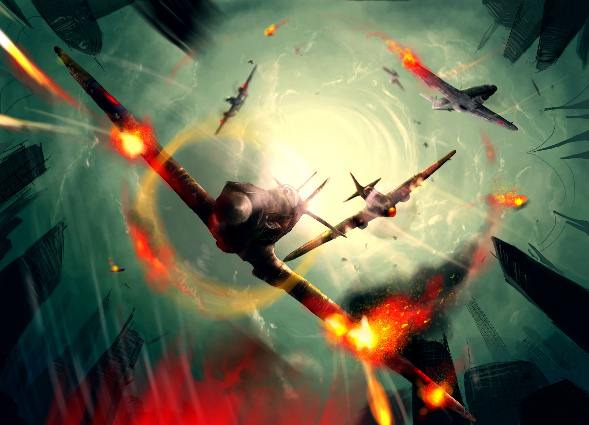
FIRE, WATER, EARTH, AIR
For my AS Exam in Art and Design, I was given the theme of 'Fire, Water, Earth, Air'. With such a broad theme, I researched my idea of how all 4 elements are 'working together' to stop the human race from further destroying the Earth with their developments. Aircraft were a huge step to the future of travel and later, war, as humans once again fight for their own power and ‘for peace’. As soon as people took to the skies, the power of the elements amplify. The winds get stronger as aircraft get greedy and take to higher skies and speeds, the rain damages their sight, the fire destroys the aircraft and the debris lifted up by the high speeds of winds can only make things worse.
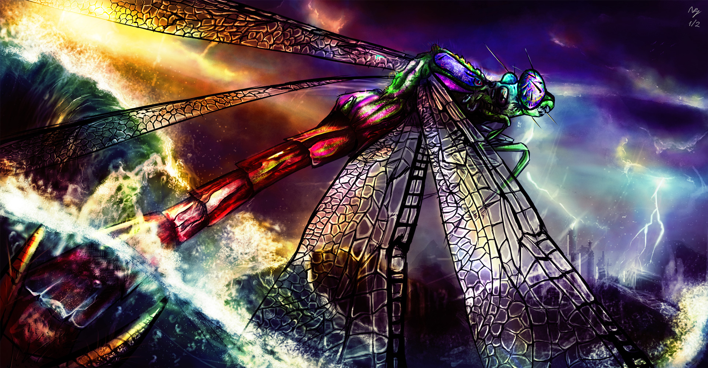
METAMORPHOSIS
In this project for my Art and Design A levels, I created a digital piece showing the future evolution of the omnipresence of insects, as I am very interested in the idea of how insects may be the most complex and the most perfected creatures on Earth, withstanding thousands of years of evolution and yet we still shun and ignore for their pestillence. I wanted to show both the beauty and the repulsion for these magnificent animals that can change the perception of insects within our minds. This piece in particular was a commission for a friend who desired an image that was bright and overdramatic.
DRAFTS
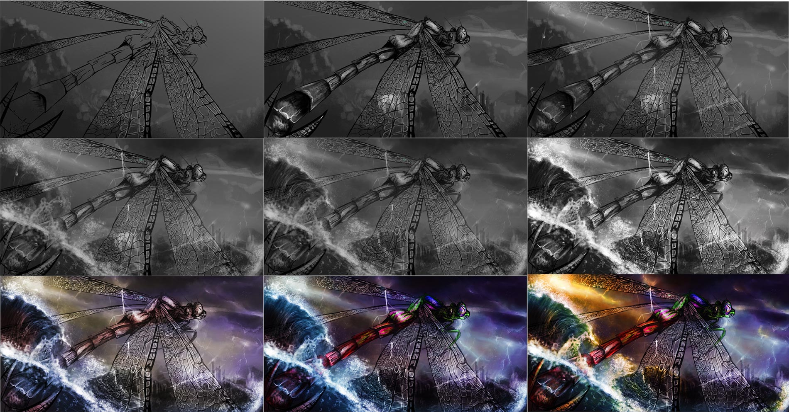
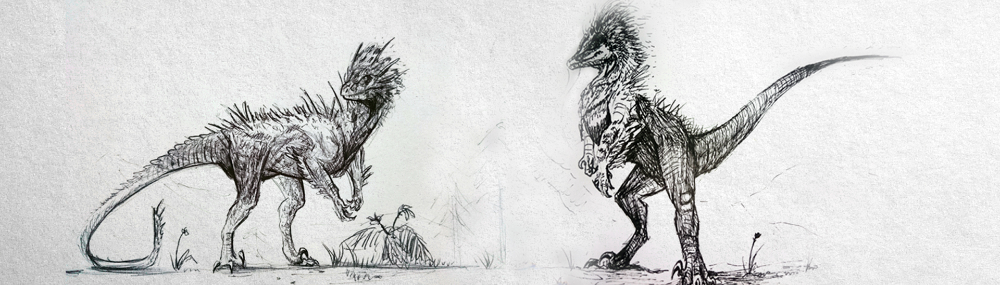
RAPTOR
CONCEPTS
Some practice sketching on drawing raptors in my own style in preparation for creating a 3D model in Zbrush in the future.
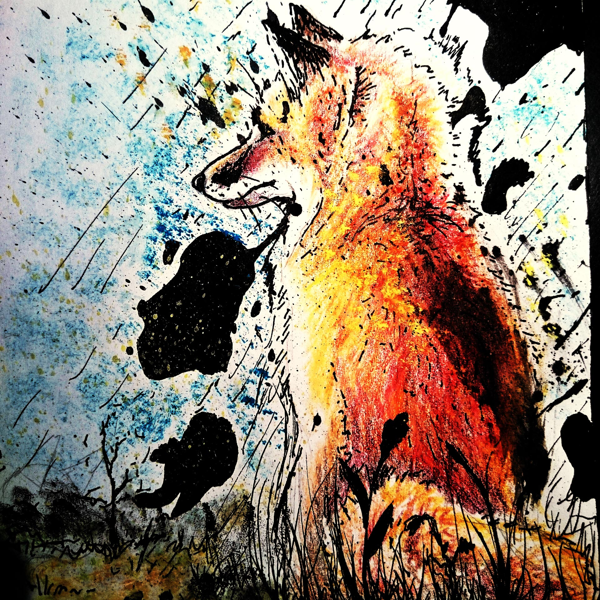
BAD TRIP
An experimental fineliner and colour pencil drawing of a fox for a friend. The black blotches represent the vision defects that people tend to get when they are dreaming.
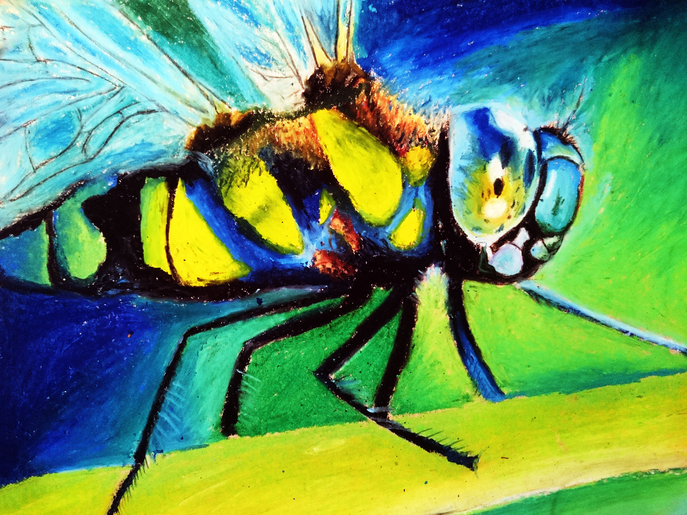
WE ARE OBLIVIOUS
A vibrant oil pastel drawing of a dragonfly, done as part of my A2 Art & Design coursework.
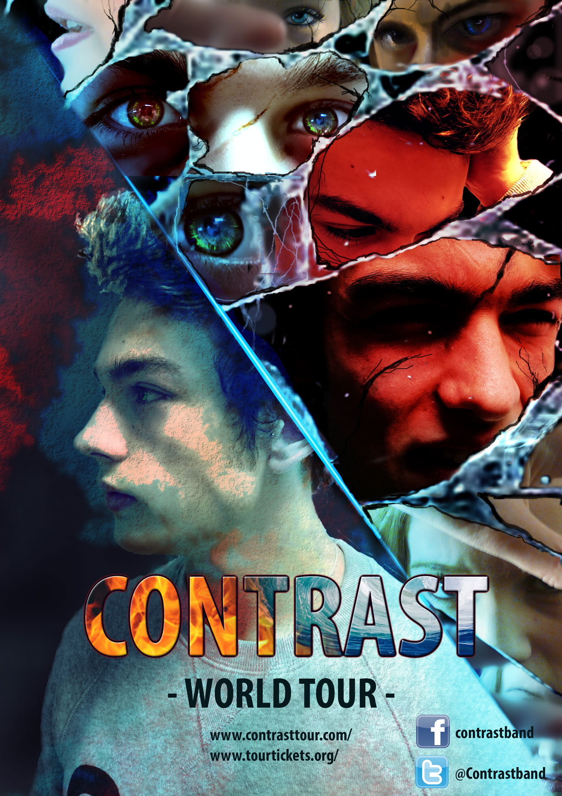
CONTRAST POSTER
For my A2 Media coursework, I created a poster which would be for the band's live tour. It features a graphical montage of different drawings and imagery to establish action and conflict in the mind of the subject. It encorporates photomanipulation and digital painting. The design was inspired by Pendulum's 'Immersion' album art.
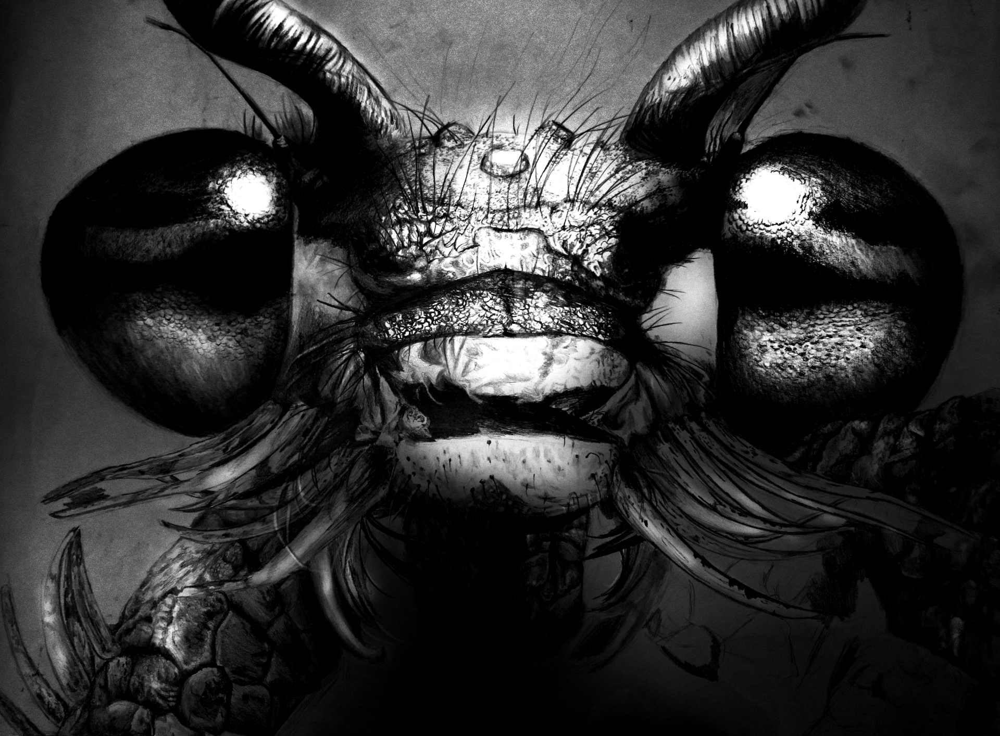
POLAR OPPOSITES
An A2 sized pencil drawing. It was as frustrating as it sounds. This is a continuation on my A2 Art & Design insect project, that includes further studies of insects.
In this project for my Art and Design A levels, I created works showing the future evolution of the omnipresence of insects, as I am very interested in the idea of how insects may be the most complex and the most perfected creatures on Earth, withstanding thousands of years of evolution and yet we still shun and ignore for their pestillence. I wanted to show both the beauty and the repulsion for these magnificent animals that can change the perception of insects within our minds.
EVOLUTION
A quick painting of an evolved insect looking at its previous ancestor. This is a continuation on my A2 Art & Design insect project, that includes further studies of insects.
In this project for my Art and Design A levels, I created works showing the future evolution of the omnipresence of insects, as I am very interested in the idea of how insects may be the most complex and the most perfected creatures on Earth, withstanding thousands of years of evolution and yet we still shun and ignore for their pestillence. I wanted to show both the beauty and the repulsion for these magnificent animals that can change the perception of insects within our minds.
FALLING SUN
A rather fast painting of an aircraft flying towards the horizon, done with the help of a painted model Sabre aircraft from my grandfather.
DRAFTS
BUSINESS CARD
A business card design for a graphic design company for my coursework at University.
DRAFTS
CALLIGRAM
A calligram of a Ju87 night bomber on a dive, with text from an interview with a pilot and civillian about their PTSD caused by the sounds of the Ju87.
POSTER DESIGN
A poster for a made-up air show in Bournemouth. I wanted to create a mix between the traditional poster effect, and the watercolour effect to create a traditionally-drawn looking poster.
INSTAGRAM PROMO
A promotional graphic for Instagram accounts created for Ghost Partnership, a company that aims to give students good deals on stores around Canterbury.
INSTAGRAM PROMO
A promotional graphic for Instagram accounts created for Ghost Partnership, a company that aims to give students good deals on stores around Canterbury.
Rough Tempo Artist Design
A DJ set poster for Rough Tempo for my brother.
SURVIVAL
A raptor study applied to my style, drawn from reference, using prismacolour pencils.
DANGER CLOSE
A still-life study of a dead hornet, combined with a very rough watercolour style using the colour connotations of a hornet. This is a continuation on my A2 Art & Design insect project, that includes further studies of insects.
In this project for my Art and Design A levels, I created works showing the future evolution of the omnipresence of insects, as I am very interested in the idea of how insects may be the most complex and the most perfected creatures on Earth, withstanding thousands of years of evolution and yet we still shun and ignore for their pestillence. I wanted to show both the beauty and the repulsion for these magnificent animals that can change the perception of insects within our minds.
NO MORE
A watercolour painting in the style of another artist. This is a continuation on my A2 Art & Design insect project, that includes further studies of insects.
In this project for my Art and Design A levels, I created works showing the future evolution of the omnipresence of insects, as I am very interested in the idea of how insects may be the most complex and the most perfected creatures on Earth, withstanding thousands of years of evolution and yet we still shun and ignore for their pestillence. I wanted to show both the beauty and the repulsion for these magnificent animals that can change the perception of insects within our minds.
THE EYE
A Photoshop drawing of a dogfight in the middle of a hurricane. This is part of my A Level project, given the theme of 'Fire, Water, Earth, Air'. With such a broad theme, I researched my idea of how all 4 elements are 'working together' to stop the human race from further destroying the Earth with their developments. Aircraft were a huge step to the future of travel and later, war, as humans once again fight for their own power and ‘for peace’. As soon as people took to the skies, the power of the elements amplify. The winds get stronger as aircraft get greedy and take to higher skies and speeds, the rain damages their sight, the fire destroys the aircraft and the debris lifted up by the high speeds of winds can only make things worse..
STALE DYSTOPIA
A drawing of a bearded dragon being confined in a box, unknowing of the world around it.
CD FRONT COVER
The front cover of a CD case design for my A2 Media Studies coursework, which encorporates photomanipulation and digital painting. The design was inspired by Pendulum's 'Immersion' album art.
MEANT TO BE
A drawing, quite similar to the commissioned version, of a dragonfly 'evolving' out of the water. This is a continuation on my A2 Art & Design insect project, that includes further studies of insects.
In this project for my Art and Design A levels, I created works showing the future evolution of the omnipresence of insects, as I am very interested in the idea of how insects may be the most complex and the most perfected creatures on Earth, withstanding thousands of years of evolution and yet we still shun and ignore for their pestillence. I wanted to show both the beauty and the repulsion for these magnificent animals that can change the perception of insects within our minds.
CD INSET DESIGN ONE
The first inset case design for my A2 Media Studies coursework, which encorporates photomanipulation and digital painting. The design was inspired by Pendulum's 'Immersion' album art.
CD INSET
DESIGN TWO
The second inset CD case design for my A2 Media Studies coursework, which encorporates photomanipulation and digital painting. The design was inspired by Pendulum's 'Immersion' album art.
CD BACK COVER
The back cover of a CD case design for my A2 Media Studies coursework, which encorporates photomanipulation and digital painting. The design was inspired by Pendulum's 'Immersion' album art.
Breathe
A small watercolour painting of a character design for an online contest.
3D Show reel
A 3D and visual FX show reel showing all of my 3D work in first year of University, produced in Autodesk Maya and Mudbox.
Annie's at Folkestone
Annie's at Folkestone is a new and small local business with the goal of delivering quality floral arrangements in the local are at Folkestone. Because of the small audience, my client needed a small, simple website that she can use as a tool to show off her creations while allowing her customers to order online. This provided her a way to organize her customers' orders as well.
I created a simple but proffesional website that showcased the best of Annie's at Folkestone's qualities. Affordable and home-grown flowers that can be delivered to your doorstep or custom arrangements for special occasions.
Wheelbarrow Model
An accurate model of a Wheelbarrow I created from scratch including UVs and textures. For my assignment, I needed to create a model which will fit seamlessly within the scene. I also needed to make accurate lighting and positioned the camera correctly so that the model will be set with the correct perspective.
Takeoff
A watercolour and fineliner painting of a dragonfly that was taking off of my hand. This is a continuation on my A2 Art & Design insect project, that includes further studies of insects.
In this project for my Art and Design A levels, I created works showing the future evolution of the omnipresence of insects, as I am very interested in the idea of how insects may be the most complex and the most perfected creatures on Earth, withstanding thousands of years of evolution and yet we still shun and ignore for their pestillence. I wanted to show both the beauty and the repulsion for these magnificent animals that can change the perception of insects within our minds.
GENERATION ANXIOUS
A short documentary as part of my course at University. I had the role of assistant director/producer, organizing and setting up shots for the film.
ROGUE
I was commissioned by a writer to create a mythical Orc based on the World of Warcraft series. He requested a design that would aid him to fully realize his character and to give him a foundation on which to build upon his fiction. Additionally the art would have to encompass the character's nature. This was done by setting the character in a landscape that has importance to the Orc.
This was a big project for me, as an artist I don't feel very confident in my skills as a landscape artist. I wanted to utilize the style of a concept artist, which they would normally focus on atmosphere and depth rather than detail into the landscape so that it speeds up the design process. I prefer this style over highly detailed landscapes because I feel that the style outweighs any need for extreme detail which the viewer may or may not appreciate. Plus, less time taken on the landscape as well would allow me more time to focus on the detail of the Orc, which the art focuses on. Unfortunately, this style takes a lot of research and practice, which took a lot of my time to learn. Not all of the techniques I've learnt are shown here, because I learnt and understood the techniques better afterwards.
So, throughout this painting, I have gained a lot of knowledge and practice to move on to bigger things and hopefully speed up the process.
The commissioner and I communicated regularly, sending previews of the sketches, landscape thumbnails and progress with the painting of the orc. The commissioner has a huge interest in physiology and anatomy which helped me to understand the anatomy of an orc which is slightly different to that of a regular human.
Approaching the end, I created many layers with pure lighting and depth adjustments where I will add debris, flares and bokeh effects to create varying areas of focus.
DRAFTS
One Generation
An experimental film inspired by the works of Paul Bush's Morphism technique, exploring the themes of a single generation growing up to be tossed aside, much like old film technology. I worked in a group of 3, developing the idea and the final project in After Effects.
Esfir
Concept art for my third year game project, about to be produced in Maya and ZBrush. It is a possible playable character in this game.
Magnetism Project Pitch
Our final pitch for our final year project, co-produced with Developer and Musician Milan Maru. This features our own lighting set-up and detailed animation, voice-equalizing and original soundtrack.